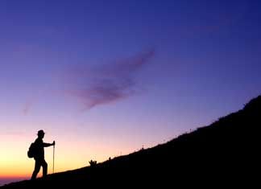

After you've read the following essay, we invite you to discuss your thoughts on walkers rights and trespassing laws by clicking here. - Mother Earth News editors
When very-much-a-non-Saint Edward Abbey violated billboards back in the 1950s (leading to the frolic of the Monkey Wrench Gang as told in the classic novel of 1976) things were different. Signs were made of wood. And commerce wasn’t as sophisticated as it is today. He could use a hatchet, or gasoline and matches, to rid the rural landscape of these human-made blemishes. No more.
Now the signs which barrage us with so much information are made by impersonal corporations and constructed of steel. They can still be “monkey wrenched,” but it takes quite a tall ladder, guts and spray paint. But no matter the effort, getting rid of them is no longer possible (outside of dynamite or legal means).
When my wife and I bought a small off-the-grid cabin as our Thoreau-type home, we were quite happy. Three acres nestled at 2,000 feet, where the Sierra Mountains meet the Cascade Mountains - it was exactly what we were looking for. Good California climate. Reasonable road access. Close enough to jobs. Cheap enough to enable us to work part-time. Wild. Semi-level. And solar powered. Happiness.
From the former owners, we inherited those ugly “no trespassing” signs which encircled the three-acre property. One of our first acts of sociability was to walk the property and tear down the noxious signs. Why? Because they are ugly and made of plastic (they will last thousands of years). Their loud, neon letters are anti-social. I want the animal life to trespass. All the bunnies, deer, bears, raccoons, rattlesnakes, gophers, mountain lions, skunks and the occasional hiker are welcome to walk through our property.
Evidently, not everyone feels the same as I do.
One evening I was out for a walk, with walking stick in hand (having encountered a grumpy rattlesnake on an earlier sojourn with my wife, a staff is essential). Fortified with a bellyful of wine and dollop of Johnny Walker Red, I set out to walk the dirt and gravel roads of our mountainous homestead. Beauty.
The cabin inhabits a ridge top, with canyons on either side. Our private road gives access to a number of three- to 10-acre properties. No electricity lines here. Part-time, full-time and no-time residents live off the grid. Solar panels and the occasional wind turbine provide the power (and the gasoline-fired generators - oh, to get rid of those things). No streetlights. Rural bliss.
So walking with staff in hand is a pleasure. Just the occasional resident in a pickup, choking along at five to 10 mph, is the only hazard of human proportions. Summer. The coolness of the evening, welcome after the heat of the day. The chirps of birds. Scat of all varieties. Deer. The scamper of a squirrel. I walked the road.
Brave from the Johnny Walker, I surveyed all the “no trespassing” signs. What are they protecting? “Keep Out!” Violating the sign's premise, I wandered through a broken-down, former meth-amphetamine house. Abandoned. And obviously in the disrepair that people who don’t care about their lives leave behind. Trash. Biker magazines. More trash. Refuse. And posted as a public nuisance. No small wonder these folks didn’t want anyone to trespass.
An idea: If Butte County could declare such a property a “public nuisance,” couldn’t I, as a guardian of the ridge, do the same? I made a decision to tear down the nuisance “no trespassing” signs. Ed Abbey would be proud. One by one, on my two-mile walk, I rid my daily route of the gnarly beasts.
Six months later, the walk is much prettier. And none of the signs have returned.
However, on our road, there is one last property. A chain across the dirt path, with a large “keep out” sign, forbids my access. Of course, these folks drive through my property to get to theirs. Why so uninviting? Why should my walk be so unpleasantly cut short? What are the rights of walkers, hikers and sightseers?
I live in the wrong country. The rights of property owners are well respected here. Sabotage of private property of any sort is dealt with forcefully. The anarchist group, the Earth Liberation Front, knows this. They got a 25-year prison sentence for burning an SUV in protest of inappropriate consumerism. My own spouse sat in a tree in a national forest. For this (because she protected the rights of a 400-year-old Engelmann spruce), she was branded an “eco-terrorist felon” and did a month in prison.
But I’m not talking about sabotage. I’m talking about taking a walk.
I’m not a fan of restricted access to anything (except when it comes to greedy corporations). We need access to the Internet. To information. To beauty. Especially if what you are accessing is human-powered. Legs should be able to take us anywhere. Walk any road. It’s good for you.
If there is a road already there, a walker/hiker should be able to walk it. And we should be protected to have that right. No one should be able to corner a part of the Earth as completely theirs. Public access to beaches, parks, national parks … and all rural roads. All should be encouraged.
Even if the property is private? Yes. A road should be closed to pedestrians only if by walking the road one is disturbing the flora and fauna of an area. Breeding seasons for seals come to mind. And the nesting of rare birds. Otherwise, let no human violate another human’s right to walk. Protect the animals, not the property owners. The property has been violated enough already by the road being there. For heaven’s sakes, let us take a walk.
And gated communities? Shouldn’t they have their right to privacy? No. Freedom of movement trumps any rich person’s right to privacy anytime. Open the gates! What the hell are they hiding back there anyway? If a community receives community services, then they should be open to the community.
Now if you are being antisocial on your walk, the law still applies. Loitering laws make sense. Hanging around with malicious intent is not OK. “Thou shalt not steal” still applies to most people in this country. But walking with a stick? Let them pass.
Maybe what we need is a “walker’s rights” identity card. Fill out an application, take a class, and just like a driver’s license, you have the right to walk on any road (public or private). You’ve proven your sociability. No criminal record. Trained in social and rural etiquette. Let your walker’s license card be your ticket to improved access to all wonders, both private and public.
I can see a disturbed property owner cornering a Patagonia-clad hiker. “Get off my property!” he yells. The hiker pulls out his license, stating he/she will be respectful of both property and wildlife … and is granted legal protection to be there.
If you just have to have a “no trespassing” sign on your property because of some negative past experience, or because you just might be the paranoid type (watching too much TV perhaps?), my advice would be this: At least make the darned thing beautiful! Have it produced by an artisan. Put flowers around it. No more cheap petroleum-based, neon, anti-social signs of any kind.
And it’d be nice to have a reason for the sign: “No trespassing because this area is sensitive to foot traffic.” Or be honest: “Access is hereby restricted because I like to walk around naked on my property.” Or thus: “Please don’t trample here without my permission. I’d like to get to know you before you smell my flowers or sanctify my skunks.”
No more grumpy signs. We have enough grumpy people inhabiting our world. While walking, should you happen to come across a particularly nasty no trespassing sign, well, ahem, you could always ask yourself “What would Abbey do?”
We invite you to discuss your thoughts on walkers rights and trespassing laws by clicking here. - Mother Earth News editors
Please post photos of “no trespassing” signs at cu.MotherEarthNews.com.
If you prefer to restrict hikers on your property, read Keep Out! The Basics of Trespassing Laws.|
 ISTOCKPHOTO/ALISTAIR SCOTT Many people value the freedom to move about and enjoy the outdoors. Is unrestricted movement a natural right? |
|
|